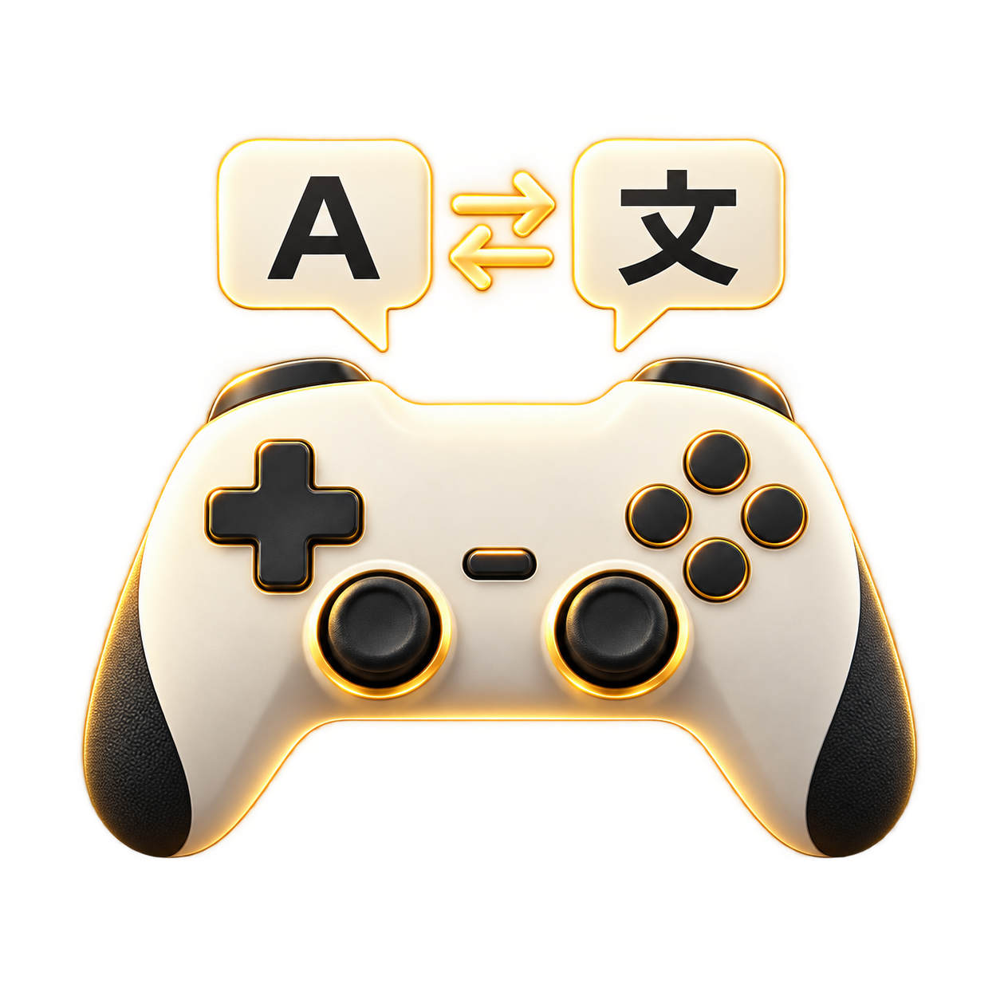
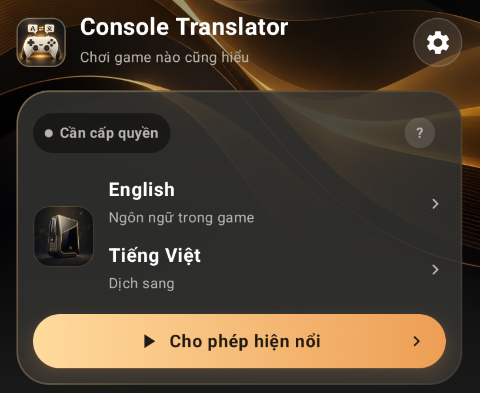
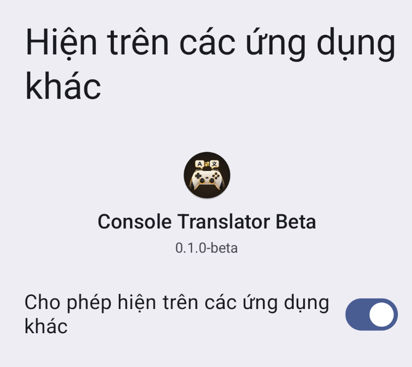
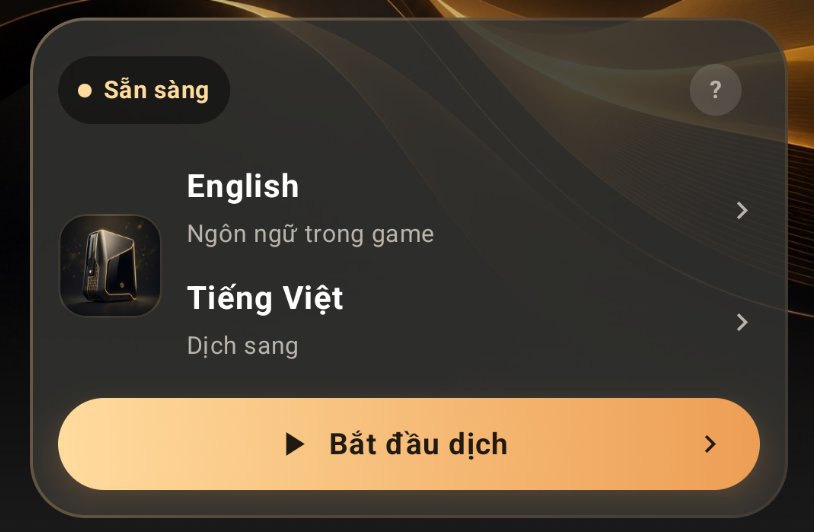
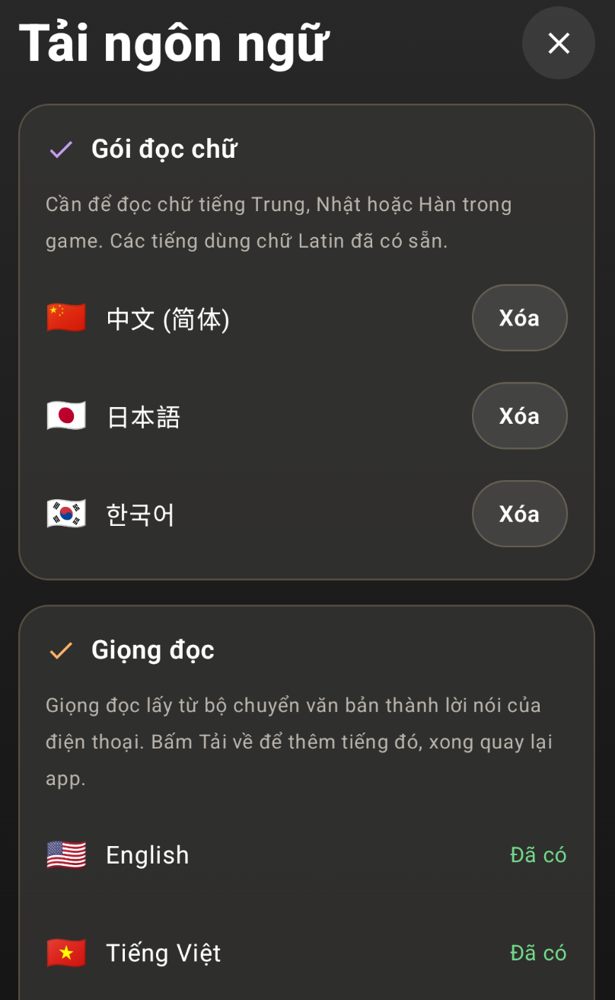
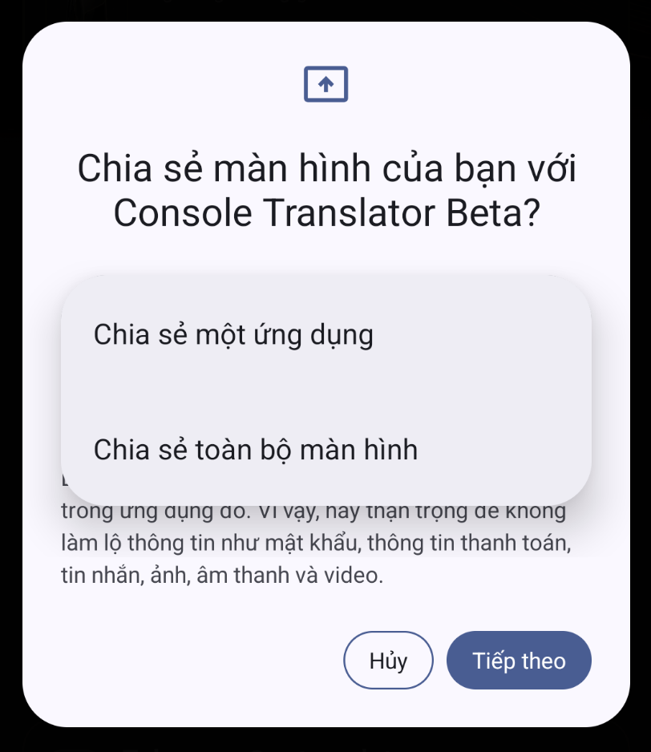
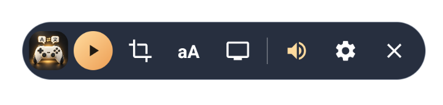
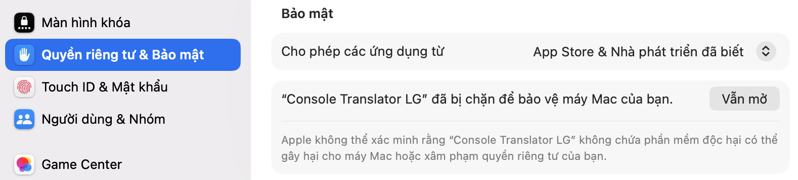

Console Translator
Chơi game nào cũng hiểu.
Hướng dẫn Android bằng hình
Cài xong cần mã beta riêng. Nhận mã và hỗ trợ qua Telegram.
Cài phụ đề TV LG · PC hoặc AndroidCài app TV · Mã Downloader & bản XiaomiBật phụ đề trong game trước. Nếu chơi qua Remote Play, hãy mở được hình game trên điện thoại.
1Cấp quyền hiện nổi
Để phụ đề xuất hiện trên game.
Mở Console Translator, bấm Cho phép hiện nổi.

2Bật quyền cho app
Chỉ cần làm lần đầu.
Nếu hiện danh sách ứng dụng, chọn Console Translator Beta. Bật Cho phép hiện trên các ứng dụng khác, rồi quay lại app.

3Tải ngôn ngữ và giọng đọc
Chỉ tải những ngôn ngữ bạn cần.
Chọn ngôn ngữ trong game và ngôn ngữ dịch sang, rồi bấm Bắt đầu dịch. Nếu app mở Tải ngôn ngữ, tải các gói còn thiếu.

Muốn nghe bản dịch, tải thêm giọng của ngôn ngữ dịch sang. Nếu hiện Đã có hoặc Xóa thì gói đó đã được tải. Xong, đóng màn hình này để quay lại.

4Chọn ứng dụng cần dịch
Chia sẻ đúng app đang có hình game.
Bấm Bắt đầu dịch lần nữa. Khi Android hỏi, chọn Chia sẻ một ứng dụng → Tiếp theo, rồi chọn game hoặc app Remote Play đang dùng.

5Chọn vùng chữ, rồi chạy dịch
Thanh nổi xuất hiện trên ứng dụng bạn vừa chọn.
Bật phụ đề trong game. Bấm nút khung quét, kéo khung bao quanh chữ gốc và bấm Xong. Sau đó bấm tam giác chạy để bắt đầu dịch.

Các nút dưới đây được xếp từ trái sang phải như trong ảnh.
Logo app
Bấm để thu gọn hoặc mở thanh nút. Giữ và kéo logo để di chuyển thanh.
Chạy / Tạm dừng
Bấm nút tam giác để dịch; bấm lại để tạm dừng mà vẫn giữ thanh nổi.
Khung quét
Chọn vùng có chữ gốc. Kéo để di chuyển, kéo góc để đổi kích thước, rồi bấm Xong.
aA · Kiểu phụ đề
Đổi cỡ chữ, màu chữ, nền và bật/tắt hiển thị chữ gốc cùng bản dịch.
Màn hình TV
Xem trạng thái và kết nối lại TV đã ghép. Ghép lần đầu trong Cài đặt → Phụ đề trên TV.
Loa · Đọc bản dịch
Bật hoặc tắt đọc to. Dùng giọng của ngôn ngữ dịch sang đã tải trên điện thoại.
Bánh răng · Chỉnh nhanh
Đổi cách dịch, phong cách, giọng đọc, tốc độ quét hoặc hồ sơ game. Có lối mở cài đặt đầy đủ.
Dấu X · Kết thúc
Dừng phiên dịch và đóng thanh nổi. Muốn dịch lại, mở app và bấm Bắt đầu dịch.
Phụ đề trên Android TV / Google TV
Cài app nhận phụ đề trên TV, chọn đúng bản bên dưới.
Mã Downloader dùng để tải app trên TV. Khác với mã mời beta và mã ghép phụ đề 8 số.
Cách cài trên TV bằng remote
- Trên TV, cài Downloader by AFTVnews từ Google Play nếu có.
- Vào Cài đặt → Ứng dụng → Quyền truy cập đặc biệt → Cài đặt ứng dụng không rõ nguồn, cho phép Downloader.
- Mở Downloader, nhập mã đúng loại TV ở trên, tải rồi cài APK. Kiểm tra tên app Console Translator TV và phiên bản 0.2.2; bản Xiaomi có đuôi -mi.
- Mở app nhận trên TV, bấm Cấp quyền hiển thị trên ứng dụng khác, bật quyền cho app rồi bấm Back. Nếu được hỏi, cho phép bỏ qua tối ưu hóa pin.
- Điện thoại và TV cùng Wi-Fi. Trên điện thoại vào Cài đặt → Phụ đề trên TV, chọn TV hoặc nhập địa chỉ hiện trên TV, nhập mã ghép 8 số rồi bấm Kết nối.
- Chuyển TV sang HDMI của máy chơi game. Giữ hình game trên điện thoại và chạy dịch theo 5 bước phía trên.
Nếu không tìm thấy quyền hiện nổi, tìm các mục Hiển thị trên ứng dụng khác hoặc Xuất hiện trên cùng trong Cài đặt TV. Một số phần mềm TV khóa quyền này.
TV Xiaomi nội địa: cần làm gì khác?
TV Xiaomi mua từ Trung Quốc dùng bản 0.2.2-mi, mã 8342297. Xiaomi bản quốc tế chạy Android TV / Google TV dùng bản thông thường.
Bản nội địa chỉ hiện phụ đề khi đã rời màn hình app nhận và chuyển sang cổng HDMI. Màn hình app chưa hiện phụ đề là bình thường; đừng bấm Tắt app trước khi chơi.
Nếu TV không có Google Play hoặc Downloader, tải đúng APK bằng nút phía trên, chép vào USB rồi mở bằng trình quản lý tệp của TV để cài. Cho phép cài APK cho trình quản lý tệp khi được hỏi; tên menu tùy TV.
Nếu bản thường bị đóng hoặc không hiện phụ đề trên Xiaomi nội địa, chuyển sang bản -mi, cấp quyền và ghép lại bằng mã 8 số của bản đó.
Cần thêm? Mở phần bạn muốn xem
Cài APK và nhập mã beta
Nhận APK và mã mời từ người phát hành. Cài APK, mở app, dán đầy đủ mã ANDROID-… rồi bấm Kích hoạt trên máy này. Bản beta cần mạng và mã còn hạn. Mã cũ 32 ký tự vẫn dùng được; mã LGTV dành cho bộ cài Windows/Mac.
Cập nhật bằng APK mới để giữ dữ liệu. Nếu mã hết hạn hoặc cài bị lỗi, liên hệ hỗ trợ trước khi gỡ app.
Chơi trên TV LG · Cài bằng Windows, Mac hoặc Android
TV LG cần Developer Mode. Điện thoại vẫn chạy dịch và nhận hình game; PC chỉ dùng cài hoặc mở app TV.
1. Chuẩn bị TV: cài Developer Mode trong LG Apps, đăng nhập LG Developer, bật Dev Mode Status. Sau khi TV khởi động lại, bật Key Server. PC, điện thoại và TV cùng mạng.
2. Cài bằng Windows 10/11:
Tải bộ cài LG cho PC 1.2.6 Tải bộ cài LG cho Mac 1.0.1- Giải nén ZIP, mở Chay-Console-Translator.bat. Nếu thiếu Node.js, bấm Cài Node.js, cài bản LTS rồi mở lại.
- Nhập IP và Passphrase 6 ký tự hiện trên TV, bấm Kết nối TV. Kiểm tra đúng IP trước khi xác nhận khóa kết nối.
- Nhập mã LGTV đầy đủ nhận từ Telegram, bấm Cài đặt lên TV, chờ hoàn tất. Công cụ tự chuẩn bị gói cài.
Cài bằng Mac: giải nén ZIP, kéo Console Translator LG vào Applications rồi mở app. Cần macOS 12 trở lên (Intel/Apple Silicon). Nếu thiếu Node.js, bấm Cài Node.js ngay trong app và chờ hoàn tất. Nút Hỗ trợ Telegram dùng để nhận mã hoặc gửi log. Nhập IP/Passphrase, kết nối TV rồi nhập mã LGTV và cài. Nếu macOS chặn mở, vào Cài đặt hệ thống → Quyền riêng tư & Bảo mật → Vẫn mở với ZIP từ GitHub chính thức.
Mac báo “Console Translator LG chưa được mở”

- Bấm Xong trong cảnh báo. Không chọn Chuyển vào Thùng rác nếu muốn tiếp tục cài.
- Mở Cài đặt hệ thống → Quyền riêng tư & Bảo mật, kéo xuống phần Bảo mật.
- Tại thông báo chặn Console Translator LG, bấm Vẫn mở / Open Anyway. Nhập mật khẩu Mac hoặc dùng Touch ID nếu được hỏi.

Chạm ảnh để xem lớn. Bấm Vẫn mở ở bên phải. - Khi cảnh báo xuất hiện lại, bấm Mở / Open.

Nếu chưa thấy Vẫn mở, thử mở app lần nữa rồi quay lại mục Bảo mật. Chỉ thực hiện với bản tải từ GitHub chính thức. Hướng dẫn của Apple.
Mac nhớ thông tin TV trong Keychain. Mã đã gắn với Windows cần cấp riêng cho Mac. Mỗi lần chơi bấm Mở app trên TV trong công cụ Windows hoặc Mac.
Không có máy tính? Trong bản beta Android, vào Cài đặt → Phụ đề trên TV → Cài cho TV LG webOS, nhập IP/Passphrase và bấm Cài lên TV. Cách này dùng quyền beta Android, không dùng mã cài PC.
3. Mỗi lần chơi: bật PX5 trước, chuyển TV sang HDMI. Bật Key Server nếu chưa bật rồi quay về HDMI. Trong công cụ Windows hoặc Mac bấm Mở app trên TV. Trên Mac, xác nhận Đã hiện hình, mở app khi TV đã hiện hình PS5 qua HDMI. Hoặc dùng Mở app đã cài trong màn hình LG của Android.
4. Ghép phụ đề: trên Android vào Cài đặt → Phụ đề trên TV, chọn TV hoặc nhập địa chỉ hiện trên TV. Nhập mã 8 số hiện trong app TV rồi kết nối. Mở hình game bằng Chiaki-Up, chia sẻ ứng dụng đó và chạy dịch như các bước phía trên.
Mã LGTV dùng trong Windows 1.2.6 hoặc Mac 1.0.1; mã ANDROID kích hoạt app điện thoại. Passphrase dùng kết nối LG, mã 8 số dùng ghép phụ đề. Ngày giờ trong mã là lúc tạo theo giờ Việt Nam, không phải hạn sử dụng. Mã cũ 32 ký tự vẫn dùng được. PC nhớ IP/Passphrase sau khi kết nối, nếu trên TV đổi thì nhập lại.
Tránh bấm Home/Cài đặt trên remote khi chơi, chỉ nên tăng/giảm âm lượng. Bấm EXTEND trong Developer Mode trước khi hết hạn. Thu hồi hoặc xóa mã cài PC chỉ chặn cài tiếp, app đã cài vẫn mở được. Khả năng hiện trên HDMI tùy mẫu TV.
PC 1.2.5 trở xuống chỉ nhận mã cũ. Để nhập mã LGTV mới, đóng bản cũ, giải nén bộ cài 1.2.6 vào thư mục mới rồi mở file .bat.
Không có bản dịch hoặc không nghe giọng
- Bấm Bắt đầu dịch mà không hiện hộp hỏi quyền: bản beta phải kiểm tra mã qua mạng trước. Từ bản 0.1.2 app báo lý do (mất mạng hoặc mã hết hạn); kết nối mạng rồi bấm lại.
- Chọn nhầm app khi chia sẻ: ở bước Chia sẻ một ứng dụng phải chọn đúng game, YouTube hoặc app Remote Play đang có hình. App đứng đầu danh sách thường là app vừa mở gần nhất (ví dụ app nhắn tin), chọn nhầm thì không dịch được gì.
- Không có chữ: nội dung phải có phụ đề hiện trên màn hình (bật phụ đề trong game, hoặc nút CC trên YouTube). Kiểm tra đã bấm nút chạy và khung quét đúng chỗ phụ đề.
- Máy lag: trong bánh răng trên thanh nổi, giảm tốc độ quét xuống 1.5 hoặc 2.5.
- Hình chia sẻ bị đen: app game/Remote Play có thể chặn chụp màn hình. Kiểm tra ảnh chụp/chia sẻ từ Chiaki-Up có hiện chữ game hay không. Nếu vẫn đen, báo người phát hành để kiểm tra.
- Không nghe giọng: bật nút loa, tăng âm lượng và kiểm tra giọng đã tải.
- Dịch cả menu: thu nhỏ vùng quét; dời phụ đề dịch để không che chữ gốc.